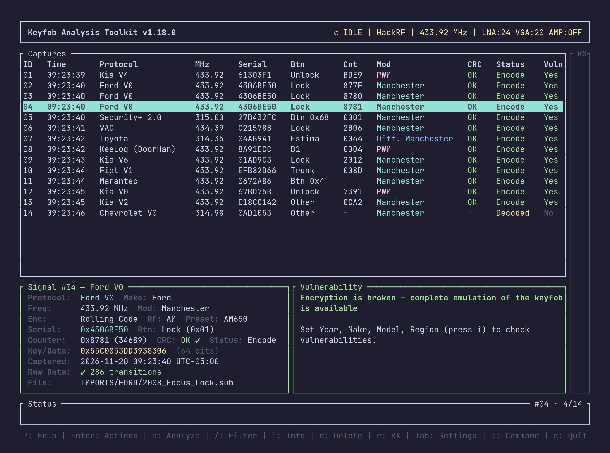

Software and reference work
KAT: Keyfob Analysis Toolkit
A terminal application for capturing, decoding and retransmitting the signals of car key fobs and of garage, gate and barrier remotes.
Abstract
KAT is a terminal application that captures, decodes and retransmits the
radio signals of car key fobs and of garage-door, gate, barrier and shutter
remotes. It works with a HackRF One (receive and transmit), an RTL-SDR
(receive only), a Flipper Zero on USB (receive and transmit) and, to
receive, any radio SoapySDR drives, several at once and each on its own
frequency, and it decodes IQ recordings and
Flipper Zero .sub files with no radio attached. It has
{{decoders}} protocol decoders, {{car}} for car key fobs and alarms and
{{gate}} for garage, gate, home and sensor remotes, each checked against
the reference C code it follows or, where no reference reads the remote,
against recordings.
This site is also a reference work on what remotes send. Every protocol has a page with the facts the program itself uses, the recordings it was worked out from and the FCC filings of the remotes that send it, and every table links to the file or the source it comes from.
- protocol decoders
- {{decoders}}
- recordings of remotes
- {{recordings}}
- remotes documented
- {{remotes}}
- car makers
- {{carmakers}}


What it does
- Receive
- One receive chain for a HackRF, an RTL-SDR (any of six tuners), a radio SoapySDR drives (Airspy, SDRplay, LimeSDR, PlutoSDR …) and IQ recordings, AM/OOK and FM/2-FSK; a Flipper Zero hands over the pulses it demodulates itself. A wide-band detector finds remotes anywhere in the received band, two at once included, with no loss of sensitivity measured out to ±325 kHz off the tuned frequency. Over the air it caught 239 of 250 frames a Flipper Zero replayed. Receive chain and its measurements · RTL-SDR tuners · SoapySDR radios · Flipper as the radio · Recording a remote
- Decode
- {{decoders}} decoders. They follow ProtoPirate where it has the protocol, then Flipper-ARF, doctor-firmware, Momentum, RogueMaster and FoxFW; remotes no Flipper firmware reads use receive-only ports of rtl_433, and a few that no reference reads use KAT's own decoders, worked out from recordings. Protocols · By make · Sources, and what “checked” means
- Transmit
- Lock, Unlock, Trunk and Panic from a decoded capture, with a HackRF or a Flipper Zero. Rolling-code protocols send the next code wherever the references do, and re-send the captured frame where no key is available.
:newmakes a gate or garage remote of any of 87 types to pair with a receiver. Transmit · Add Manually - Recover keys
- Where a protocol's cipher allows it: KeeLoq manufacturer keys, PSA keys and the HiTag2 keys of Fiat and Renault remotes, on the CPU or a graphics card. KeeLoq · PSA · HiTag2 Hell
- Analyze and compare
- What any capture is, decoded or not: its keying, pulse widths, line coding, frames and bits; and what each bit does from press to press: fixed, counter, button or encrypted. Analyze · Compare · Unread recordings
- Files and sessions
- Flipper Zero
.subcaptures and key files, IQ recordings from a HackRF, an RTL-SDR or a PortaPack, and KAT's own.fobformat.kat --decodeprints the decodes of files and folders without the interface; captures are saved as they arrive and restored at the next start. Flipper key files · Sessions and saved fobs · Command line
The reference
The pages below are generated from the program's own tables, the recordings in the repository and the FCC filings that were read, so the site says what the software does and not what someone remembers it doing.
| Part | Entries | What it holds |
|---|---|---|
| Protocols | {{decoders}} | Line coding, modulation, pulse widths, frame length and code type of every protocol, in one table that sorts and filters. |
| Makes | {{makes}} | What each car maker's remotes send, year after year and supplier after supplier, and the brands of gate remotes. |
| Remotes | {{remotes}} | The hardware: pictures of {{pictured}} remotes and their circuit boards, and what their FCC filings say. |
| Chips | {{chips}} | The transmitters, controllers and transponders on those boards, with data sheets where they are public. |
| Recordings | {{recordings}} | Real remotes as Flipper .sub files: a link to every file, and what KAT reads from it. |
| FCC IDs | {{fcc}} | The remotes' FCC filings tied to protocols, with how sure each tie is. |
| Coverage | How much of what is on the road KAT reads, by model-year and make, and the remotes a recording is wanted of. | |
| Guides | How KAT receives, decodes and sends, how to record a remote, the glossary, and where the facts come from. |
Getting started
Each release
has an archive for 64-bit Linux on Intel, AMD and ARM, for Apple Silicon
Macs and for Windows, with a checksum beside it. Unpack it and run
kat: it uses every HackRF, RTL-SDR, Flipper Zero and SoapySDR
radio it finds, or runs with files alone.
kat # the interface; ? is help
kat --decode captures/ fob.sub # what KAT reads from files
kat --iq fob.cs8 --freq 433.92 --rate 2M # open an IQ recordingInstall and run has every step: the HackRF library, checking the download, the Windows driver, building from source and the first keys to press.